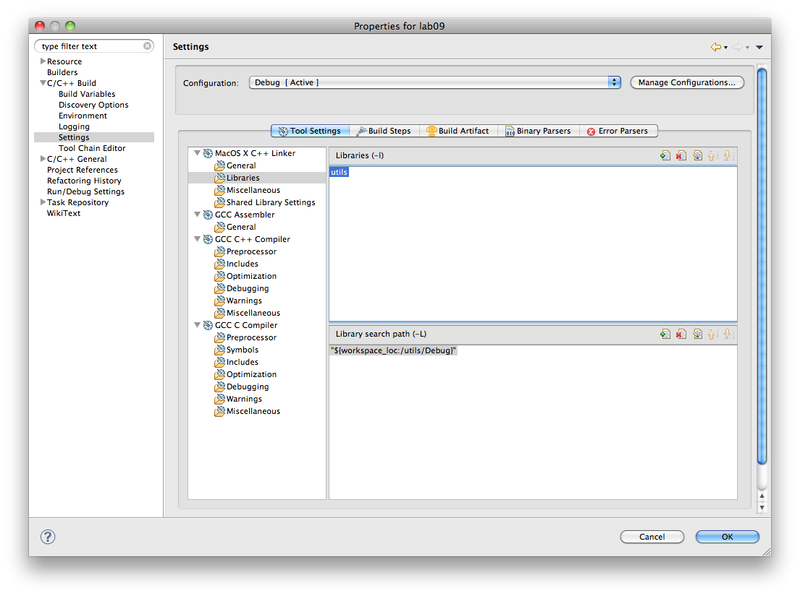

Render a simple animation of a nucleus with a orbiting electron
Extend this scene to include multiple electrons, orbiting at different rates
Encapsulate suitable abstractions to enable animation code to be concise and expressive
Create a project - lab05b - in the usual way.
This is the initial started code:
#include "libopengl.h"
void renderScene(void)
{
glClear(GL_COLOR_BUFFER_BIT | GL_DEPTH_BUFFER_BIT);
glColor3f(1.0f, 0.0f, 0.0f);
glutSolidSphere(10.0f, 15, 15);
glutSwapBuffers();
}
void setupRC()
{
glClearColor(0.0f, 0.0f, 0.0f, 1.0f);
glEnable(GL_DEPTH_TEST);
glFrontFace(GL_CCW);
glEnable(GL_CULL_FACE);
glClearColor(0.0f, 0.0f, 0.0f, 1.0f );
glMatrixMode(GL_PROJECTION);
glLoadIdentity();
glOrtho (-100.0f, 100.0f, -100.0f, 100.0f, -100.0f, 100.0f);
glMatrixMode(GL_MODELVIEW);
glLoadIdentity();
}
void timerFunc(int value)
{
glutPostRedisplay();
glutTimerFunc(50, timerFunc, 1);
}
int main(int argc, char* argv[])
{
glutInit(&argc, argv);
glutInitDisplayMode(GLUT_DOUBLE | GLUT_RGB | GLUT_DEPTH);
glutInitWindowSize(400,400);
glutCreateWindow("Lab 05b");
glutDisplayFunc(renderScene);
setupRC();
timerFunc(50);
glutMainLoop();
return 0;
}
Build and test.
You should already have a "utils" project within your workspace. This currently just contains a single header file. We will start to accumulate some general purpose code in this project now.
First, a simple class to encapsulate colours:
#pragma once
struct Color
{
float R;
float G;
float B;
float A;
static Color White;
static Color Yellow;
static Color Red;
static Color Magenta;
static Color Cyan;
static Color Green;
static Color Black;
static Color Blue;
Color();
Color(float r, float g, float b, float a=1.0f);
Color(int r, int g, int b, int a=255);
void render();
void renderClear();
};
pragma once is a directive to ensure that this header is included only once in any given source compile. It prevents multiple symbol declaration errors.
The implementation of this class:
#include "libopengl.h"
#include "Color.h"
Color Color::Black (0, 0, 0);
Color Color::Blue (0, 0, 255);
Color Color::Green (0, 255, 0);
Color Color::Cyan (0, 255, 255);
Color Color::Red (255, 0, 0);
Color Color::Magenta (255, 0, 255);
Color Color::Yellow (255, 255, 0);
Color Color::White (255, 255, 255);
Color::Color()
{
R = G = B = A = 1.0f;
}
Color::Color(float r, float g, float b, float a)
{
R = r;
G = g;
B = b;
A = a;
}
Color::Color(int r, int g, int b, int a)
{
R = (float) r / 255.0f;
G = (float) g / 255.0f;
B = (float) b / 255.0f;
A = (float) a / 255.0f;
}
void Color::render()
{
glColor4f(R,G,B,A);
}
void Color::renderClear()
{
glClearColor(R,G,B, 1.0f);
}
Read this code carefully. Note the definition of the static members, a short hand for named colours.
We only have 8 named colours. Here is a table of standard colour values:
http://cloford.com/resources/colours/namedcol.htm
You could extend the above set to include at least the VGA set from this table
//glColor3f(1.0f, 0.0f, 0.0f);
Color::Red.render();
//glClearColor(0.0f, 0.0f, 0.0f, 1.0f);
Color::Black.renderClear();
g++ -framework GLUT -framework OpenGL -o "lab09" ./src/electron.o
Undefined symbols:
...
ld: symbol(s) not found
collect2: ld returned 1 exit status
make: *** [lab09] Error 1
Although utils is on the header path, the project is not linked to our lab05b project.
To link, edit the project properties, and select //C++ Build->Settings->C++ Linker->Libraries//
Add utils as a library (top panel) and place the utils/debug folder on the library search path (lower panel)

Build and test. A Solid red sphere should be in the centre of a black canvas.
If you are having difficulty with the link, just incorporate color.- directly into your lab05b project
Color::Green.render();
glRotatef(0.0f, 0.0f, 1.0f, 0.0f);
glTranslatef(90.0f, 0.0f, 0.0f);
glutSolidSphere(6.0f, 15, 15);
Build and test. Notice that the nucleus briefly appeared, and then flashed off to the right.
Refactor the code to isolate the transformation matrix for the electron:
glPushMatrix();
Color::Green.render();
glRotatef(0.0f, 0.0f, 1.0f, 0.0f);
glTranslatef(90.0f, 0.0f, 0.0f);
glutSolidSphere(6.0f, 15, 15);
glPopMatrix();
Build and test. This should cause the nucleus and electron to appear steady.
Note that renderScene is being called 50 times a second (see the timer call in main). We can use this to make the electron revolve around the nucleus.
Declare a static int angle inside renderScene:
static int angle = 0;
glRotatef(angle, 0.0f, 1.0f, 0.0f);
angle = (angle + 10) % 360;
Introduce another electron into the animation. This one is to be orbiting on a different plan, say at 45 degree angle to the X axis.
Introduce a third electron, say at a 90 angle to X axis.
Try to position each of the above electrons to start their animation at a different point in the orbit.
struct Vector3
{
float X;
float Y;
float Z;
static Vector3 UnitX;
static Vector3 UnitY;
static Vector3 UnitZ;
Vector3(float x, float y, float z);
Vector3(float value);
Vector3();
Vector3(std::istream& is);
void render();
};
#include "libopengl.h"
#include "vector3.h"
#include "utils.h"
using namespace std;
Vector3 Vector3::UnitX(1.0f, 0.0f, 0.0f);
Vector3 Vector3::UnitY(0.0f, 1.0f, 0.0f);
Vector3 Vector3::UnitZ(0.0f, 0.0f, 1.0f);
Vector3::Vector3(float x, float y, float z)
: X(x)
, Y(y)
, Z(z)
{}
Vector3::Vector3(float value)
: X(value)
, Y(value)
, Z(value)
{}
Vector3::Vector3()
: X(0)
, Y(0)
, Z(0)
{}
Vector3::Vector3(istream &is)
{
skipComment(is);
is >> X >> Y >> Z;
}
void Vector3::render()
{
glVertex3f(X, Y, Z);
}
Copy this code into the utils project. You will also have to bring over the utils.h/cpp file as well
We can extend this class to encapsulate the translate and rotate calls:
// Header
void translate();
void rotate (float angle);
// Implementation
void Vector3::translate()
{
glTranslatef(X,Y,Z);
}
void Vector3::rotate (float angle)
{
glRotatef(angle, X,Y,Z);
}
glPushMatrix();
Color::Green.render();
Vector3::UnitY.rotate(angle);
Vector3(90,0,0).translate();
glutSolidSphere(6.0f, 15, 15);
glPopMatrix();
glPushMatrix();
Color::Green.render();
Vector3::UnitZ.rotate(10);
Vector3::UnitY.rotate(angle);
Vector3(90,0,0).translate();
glutSolidSphere(6.0f, 15, 15);
glPopMatrix();
Build and test.
Note that the last transformation - Vector3(90,0,0).translate() - moves the electron out form the origin by 90, on whatever plane has been established by the previous rotations.
The rendering of an electron can be usefully encapsulated in a single method, suitably paramaterised:
void renderElectron(Color color, float orbitRadius, float orbitAngle, float zSkew)
{
color.render();
glPushMatrix();
Vector3::UnitZ.rotate(zSkew);
Vector3::UnitY.rotate(orbitAngle);
Vector3(orbitRadius,0,0).translate();
glutSolidSphere(6.0f, 15, 15);
glPopMatrix();
}
renderElectron(Color::Green, 90, angle, 40);
Build and test
We can now have multiple electrons orbiting the nucleus:
renderElectron(Color::Green, 90, angle, 40);
renderElectron(Color::Cyan, 40, angle, 20);
static int angle2 = 0;
//
renderElectron(Color::Cyan, 40, angle2, 20);
//
angle2 = (angle2 + 5) % 360;
Having abstracted the rendering of an electron into a function, combine the rendering of the nuclues and a set of electrons into a single function call.
Then render multiple atoms on the screen, perhaps one in each quadrant, each with its own set of orbiting electrons.
Rework the application to use the model classes we have developed for the assignment.
Load from a model a specification for atom, including characteristics of the electrons to be set in orbit around the electron.
Allow the model to load multiple atom simulations